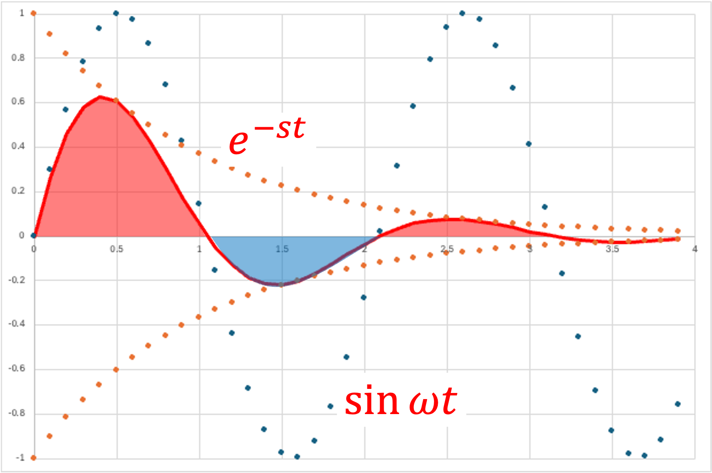
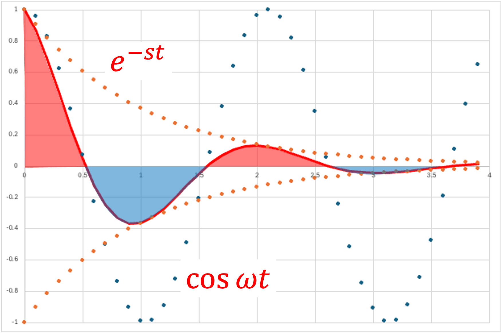
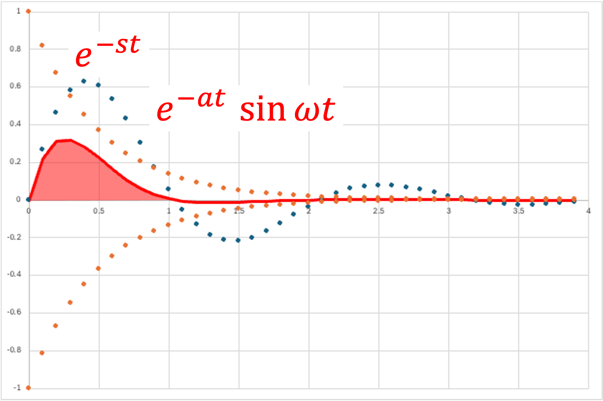
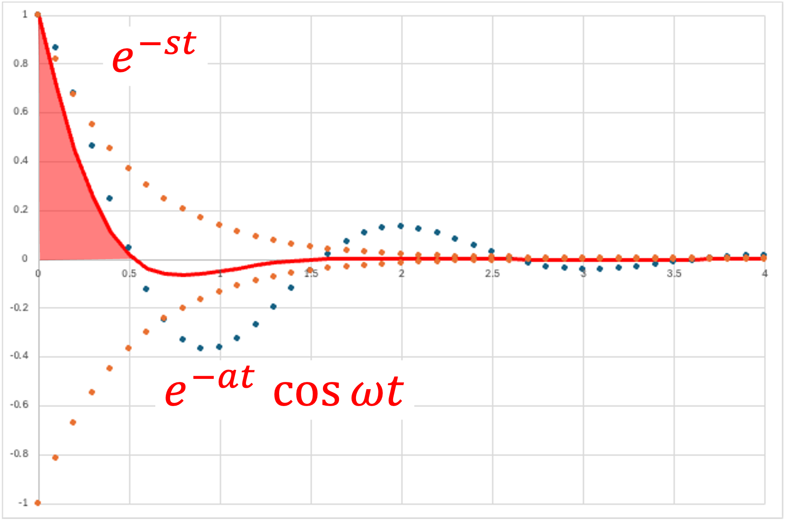

ラプラス変換＿三角関数
・三角関数 - 正弦波

\( \Large f(t) = sin \ \omega t \)
\( \Large\mathfrak{ L} \{ f(t) \} = \mathfrak{ L} \{ sin \ \omega t \}\)
\( \Large=\displaystyle \int_{0}^{ \infty } sin \ \omega t \cdot \ e^{-st} dt \)
部分積分から，
\( \Large (f \ g )' = f' \ g + f \ g' \)
\( \Large f' \ g = (f \ g )' - f \ g' \)
\( \Large \int f' \ g = \int (f \ g )' - \int f \ g' \)
\( \Large \int f' \ g = [f \ g ] - \int f \ g' \)
\( \Large f' = e^{-st} \rightarrow f = - \frac{1}{s} e^{-st} \)
\( \Large g =sin \ \omega t \rightarrow g' = \omega \ cos \ \omega t \)
\( \Large \displaystyle \int_{0}^{ \infty } sin \ \omega t \cdot \ e^{-st} dt
= \left[ - \frac{1}{s} e^{-st} \cdot sin \ \omega \ t \right]_{0}^{\infty} - \int_{0}^{ \infty } \left( - \frac{1}{s} \ e^{-st} \right) \omega \ cos \ \omega t \ dt \)
第一項は，０，∞で０となるので，
\( \Large = - \displaystyle \int_{0}^{ \infty } \left( - \frac{1}{s} \ e^{-st} \right) \omega \ cos \ \omega t \ dt \)
\( \Large = \displaystyle \frac{\omega}{s} \displaystyle \int_{0}^{ \infty } e^{-st} \ cos \ \omega t \ dt \)
もう一度部分積分を行い，
\( \Large f' = e^{-st} \rightarrow f = - \frac{1}{s} e^{-st} \)
\( \Large g =cos \ \omega t \rightarrow g' = - \omega \ sin \ \omega t \)
\( \Large \displaystyle \frac{\omega}{s} \displaystyle \int_{0}^{ \infty } cos \ \omega t \cdot \ e^{-st} dt
= \displaystyle \frac{\omega}{s} \left[ - \frac{1}{s} e^{-st} \cdot cos \ \omega \ t \right]_{0}^{\infty} - \displaystyle \frac{\omega}{s} \int_{0}^{ \infty } \left( - \frac{1}{s} \ e^{-st} \right) ( - \omega \ sin \ \omega t ) \ dt \)
第一項は，∞で０となるのですが，０では，cos ωtが１となるので，
\( \Large
\displaystyle \int_{0}^{ \infty } sin \ \omega t \cdot \ e^{-st} dt
= \displaystyle \frac{\omega}{s^2} - \displaystyle \frac{\omega^2}{s^2} \int_{0}^{ \infty } \ e^{-st} \ sin \ \omega t \ dt \)
左辺と右辺第二項をまとめると，
\( \Large
\displaystyle (1 + \frac{\omega^2}{s^2}) \displaystyle \int_{0}^{ \infty } sin \ \omega t \cdot \ e^{-st} dt
= \displaystyle \frac{\omega}{s^2} \)
\( \Large
\displaystyle \int_{0}^{ \infty } sin \ \omega t \cdot \ e^{-st} dt
= \displaystyle \frac{\omega}{s^2} \frac{1}{\displaystyle (1 + \frac{\omega^2}{s^2})}
= \displaystyle \frac{\omega}{s^2} \frac{1}{\displaystyle \frac{s^2 + \omega^2}{s^2}}
= \displaystyle \frac{\omega}{s^2 + \omega^2} \)
\( \Large \color{red}{\mathfrak{ L} \{ sin \ \omega t \}
= \displaystyle \frac{\omega}{s^2 + \omega^2}} \)
・三角関数 - 余弦波

\( \Large f(t) = cos \ \omega t \)
\( \Large\mathfrak{ L} \{ f(t) \} = \mathfrak{ L} \{ cos \ \omega t \}\)
\( \Large=\displaystyle \int_{0}^{ \infty } cos \ \omega t \cdot \ e^{-st} dt \)
部分積分から，
\( \Large (f \ g )' = f' \ g + f \ g' \)
\( \Large f' \ g = (f \ g )' - f \ g' \)
\( \Large \int f' \ g = \int (f \ g )' - \int f \ g' \)
\( \Large \int f' \ g = [f \ g ] - \int f \ g' \)
\( \Large f' = e^{-st} \rightarrow f = - \frac{1}{s} e^{-st} \)
\( \Large g =cos \ \omega t \rightarrow g' = \omega \ -sin \ \omega t \)
\( \Large \displaystyle \int_{0}^{ \infty } cos \ \omega t \cdot \ e^{-st} dt
= \left[ - \frac{1}{s} e^{-st} \cdot cos \ \omega \ t \right]_{0}^{\infty} - \int_{0}^{ \infty } \left( - \frac{1}{s} \ e^{-st} \right) \omega \ (-sin \ \omega t) \ dt \)
第一項は，∞で０となるのですが，０では，cos ωtが１となるので，
\( \Large =\displaystyle \frac{1}{s} - \displaystyle \int_{0}^{ \infty } \frac{1}{s} \ e^{-st} \omega \ sin \ \omega t \ dt \)
\( \Large = \displaystyle \frac{1}{s} - \displaystyle \frac{\omega}{s} \displaystyle \int_{0}^{ \infty } e^{-st} \ sin \ \omega t \ dt \)
もう一度部分積分を行い，
\( \Large f' = e^{-st} \rightarrow f = - \frac{1}{s} e^{-st} \)
\( \Large g =cos \ \omega t \rightarrow g' = - \omega \ sin \ \omega t \)
\( \Large \displaystyle \frac{1}{s} -\displaystyle \frac{\omega}{s} \displaystyle \int_{0}^{ \infty } sin \ \omega t \cdot \ e^{-st} dt
= \displaystyle \frac{1}{s} - \left\{ \displaystyle \frac{\omega}{s} \left[ - \frac{1}{s} e^{-st} \cdot sin \ \omega \ t \right]_{0}^{\infty} - \displaystyle \frac{\omega}{s} \int_{0}^{ \infty } \left( - \frac{1}{s} \ e^{-st} \right) \ \omega \ cos \ \omega t \ \ dt \right\} \)
右辺第二項は，０，∞で０となるので，
\( \Large \displaystyle \int_{0}^{ \infty } cos \ \omega t \cdot \ e^{-st} dt
= \displaystyle \frac{1}{s} - \displaystyle \frac{\omega^2}{s^2} \int_{0}^{ \infty } \ e^{-st} \ cos \ \omega t \ dt \)
左辺と右辺第二項をまとめると，
\( \Large
\displaystyle (1 + \frac{\omega^2}{s^2}) \displaystyle \int_{0}^{ \infty } cos \ \omega t \cdot \ e^{-st} dt
= \displaystyle \frac{1}{s} \)
\( \Large
\displaystyle \int_{0}^{ \infty } cos \ \omega t \cdot \ e^{-st} dt
= \displaystyle \frac{1}{s} \frac{1}{\displaystyle (1 + \frac{\omega^2}{s^2})}
= \displaystyle \frac{1}{s} \frac{1}{\displaystyle \frac{s^2 + \omega^2}{s^2}}
= \displaystyle \frac{s}{s^2 + \omega^2} \)
\( \Large \color{red}{\mathfrak{ L} \{ cos \ \omega t \} = \displaystyle \frac{s}{s^2 + \omega^2}} \)
・三角関数×指数関数 - 正弦波

\( \Large f(t) = e^{-at} \ sin \ \omega t \)
\( \Large\mathfrak{ L} \{ f(t) \} = \mathfrak{ L} \{ e^{-at} \sin \ \omega t \}\)
\( \Large=\displaystyle \int_{0}^{ \infty } e^{-at} \ \sin \ \omega t \cdot \ e^{-st} dt \)
\( \Large=\displaystyle \int_{0}^{ \infty } e^{-(s+a)t} \ \sin \ \omega t \cdot dt \)
部分積分から，
\( \Large (f \ g )' = f' \ g + f \ g' \)
\( \Large f' \ g = (f \ g )' - f \ g' \)
\( \Large \int f' \ g = \int (f \ g )' - \int f \ g' \)
\( \Large \int f' \ g = [f \ g ] - \int f \ g' \)
\( \Large f' = e^{-(s+a) t} \rightarrow f = - \frac{1}{s+a} e^{-st} \)
\( \Large g =sin \ \omega t \rightarrow g' = \omega \ cos \ \omega t \)
\( \Large \displaystyle \int_{0}^{ \infty } e^{-(s+a)t} \ sin \ \omega t dt
= \left[ - \frac{1}{s+a} e^{-(s+a)t} \cdot sin \ \omega \ t \right]_{0}^{\infty} - \int_{0}^{ \infty } \left( - \frac{1}{s+a} \ e^{-(s+a)t} \right) \omega \ cos \ \omega t \ dt \)
第一項は，０，∞で０となるので，
\( \Large = \displaystyle \frac{ \omega}{s+a} \displaystyle \int_{0}^{ \infty } \ e^{-(s+a)t} \ cos \ \omega t \ dt \)
もう一度部分積分を行い，
\( \Large f' = e^{-(s+a)t} \rightarrow f = - \frac{1}{s+a} e^{-(s+a)t} \)
\( \Large g =cos \ \omega t \rightarrow g' = - \omega \ sin \ \omega t \)
\( \Large \displaystyle \frac{\omega}{s+a} \displaystyle \int_{0}^{ \infty } \ e^{-(s+a)t} \ cos \ \omega t \cdot dt
= \displaystyle \frac{\omega}{s+a} \left[ - \frac{1}{s+a} e^{-(s+a)t} \cdot cos \ \omega \ t \right]_{0}^{\infty} - \displaystyle \frac{\omega}{s+a} \int_{0}^{ \infty } \left( - \frac{1}{s+a} \ e^{-(s+a)t} \right) ( - \omega \ sin \ \omega t ) \ dt \)
第一項は，∞で０となるのですが，０では，cos ωtが１となるので，
\( \Large
\displaystyle \int_{0}^{ \infty } e^{-(s+a)t} \ sin \ \omega t dt
= \displaystyle \frac{\omega}{s+a} \frac{1}{s+a}- \displaystyle \frac{\omega}{s+a} \frac{\omega}{s+a}\int_{0}^{ \infty } \ e^{-(s+a) t} \ sin \ \omega t \ dt \)
左辺と右辺第二項をまとめると，
\( \Large
\displaystyle \left\{ 1 + \frac{\omega^2}{(s+a)^2} \right\} \displaystyle \int_{0}^{ \infty } e^{-(s+a)t} \ sin \ \omega t dt
= \displaystyle \frac{\omega}{(s+a)^2} \)
\( \Large
= \displaystyle \frac{(s+a)^2 + \omega^2}{(s+a)^2} \displaystyle \int_{0}^{ \infty } e^{-(s+a)t} \ sin \ \omega t dt
= \displaystyle \frac{\omega}{(s+a)^2} \)
\( \Large
\displaystyle \int_{0}^{ \infty } e^{-(s+a)t} \ sin \ \omega t dt
= \displaystyle \displaystyle \frac{\omega}{(s+a)^2} \frac{(s+a)^2 }{(s+a)^2+ \omega^2}
= \displaystyle \frac{\omega }{(s+a)^2+ \omega^2} \)
\( \Large \color{red}{\mathfrak{ L} \{ e^{-at} \sin \ \omega t \}
= \displaystyle \frac{\omega }{(s+a)^2+ \omega^2}} \)
・三角関数×指数関数 - 余弦波

\( \Large f(t) = e^{-at} \ cos \ \omega t \)
\( \Large\mathfrak{ L} \{ f(t) \} = \mathfrak{ L} \{ e^{-at} \cos \ \omega t \}\)
\( \Large=\displaystyle \int_{0}^{ \infty } e^{-at} \ \cos \ \omega t \cdot \ e^{-st} dt \)
\( \Large=\displaystyle \int_{0}^{ \infty } e^{-(s+a)t} \ \cos \ \omega t \cdot dt \)
部分積分から，
\( \Large (f \ g )' = f' \ g + f \ g' \)
\( \Large f' \ g = (f \ g )' - f \ g' \)
\( \Large \int f' \ g = \int (f \ g )' - \int f \ g' \)
\( \Large \int f' \ g = [f \ g ] - \int f \ g' \)
\( \Large f' = e^{-(s+a) t} \rightarrow f = - \frac{1}{s+a} e^{-st} \)
\( \Large g =cos \ \omega t \rightarrow g' = - \omega \ sin \ \omega t \)
\( \Large \displaystyle \int_{0}^{ \infty } e^{-(s+a)t} \ cos \ \omega t dt
= \left[ - \frac{1}{s+a} e^{-(s+a)t} \cdot cos \ \omega \ t \right]_{0}^{\infty} - \int_{0}^{ \infty } \left( - \frac{1}{s+a} \ e^{-(s+a)t} \right) (- \omega \ sin \ \omega t) \ dt \)
第一項は，∞で０となるのですが，０では，cos ωtが１となるので，
\( \Large = \displaystyle \frac{ 1}{s+a} - \frac{ \omega}{s+a} \displaystyle \int_{0}^{ \infty } \ e^{-(s+a)t} \ sin \ \omega t \ dt \)
積分項をもう一度部分積分を行い，
\( \Large f' = e^{-(s+a)t} \rightarrow f = - \frac{1}{s+a} e^{-(s+a)t} \)
\( \Large g =sin \ \omega t \rightarrow g' = \omega \ cos \ \omega t \)
\( \Large \displaystyle \int_{0}^{ \infty } \ e^{-(s+a)t} \ sin \ \omega t \cdot dt
= \displaystyle \left[ - \frac{1}{s+a} e^{-(s+a)t} \cdot sin \ \omega \ t \right]_{0}^{\infty} - \int_{0}^{ \infty } \left( - \frac{1}{s+a} \ e^{-(s+a)t} \right) \ \omega \ cos \ \omega t \ dt \)
第一項は，０，∞で０となるので，
\( \Large
\displaystyle \int_{0}^{ \infty } e^{-(s+a)t} \ sin \ \omega t dt
= \displaystyle \frac{\omega}{s+a}\int_{0}^{ \infty } \ e^{-(s+a) t} \ cos \ \omega t \ dt \)
右辺は，
\( \Large \displaystyle\int_{0}^{ \infty } \ e^{-(s+a) t} \ cos \ \omega t \ dt\ = \displaystyle \frac{ 1}{s+a} - \frac{ \omega}{s+a} \displaystyle \int_{0}^{ \infty } \ e^{-(s+a)t} \ sin \ \omega t \ dt
=
\displaystyle \frac{ 1}{s+a} - \displaystyle \frac{\omega^2}{(s+a)^2}\int_{0}^{ \infty } \ e^{-(s+a) t} \ cos \ \omega t \ dt\)
左辺と右辺第二項をまとめると，
\( \Large
\displaystyle \left\{ 1 + \frac{\omega^2}{(s+a)^2} \right\} \displaystyle \int_{0}^{ \infty } e^{-(s+a)t} \ cos \ \omega t \ dt
= \displaystyle \frac{1}{s+a} \)
\( \Large
= \displaystyle \frac{(s+a)^2 + \omega^2}{(s+a)^2} \displaystyle \int_{0}^{ \infty } e^{-(s+a)t} \ cos \ \omega t \ dt
= \displaystyle \frac{1}{s+a} \)
\( \Large
\displaystyle \int_{0}^{ \infty } e^{-(s+a)t} \ cos \ \omega t \ dt
= \displaystyle \displaystyle \frac{1}{s+a} \frac{(s+a)^2 }{(s+a)^2+ \omega^2}
= \displaystyle \frac{s+a }{(s+a)^2+ \omega^2} \)
\( \Large \color{red}{\mathfrak{ L} \{ e^{-at} \cos \ \omega t \}
= \displaystyle \frac{s+a }{(s+a)^2+ \omega^2}} \)
次は微分です．